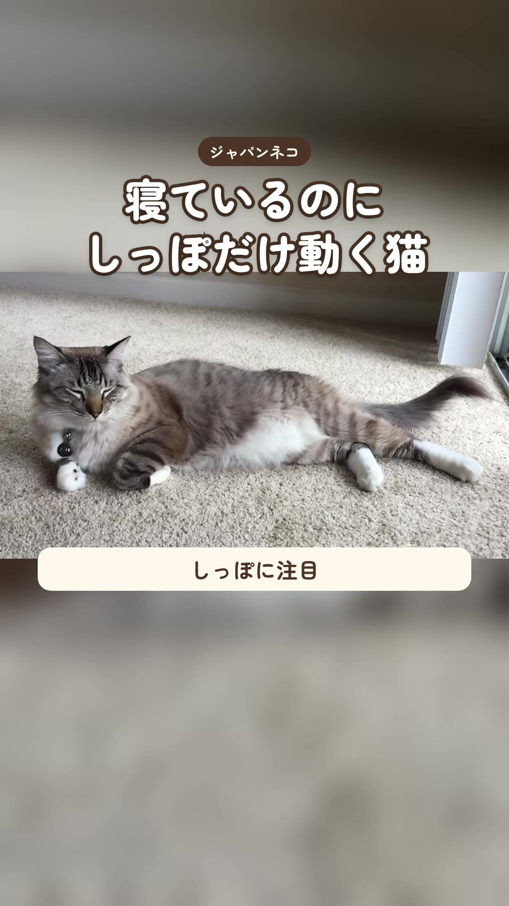

猫雑学猫が寝ているのに、しっぽだけパタパタ動いていること、ありませんか？ 2026-10-18・Instagramで公開しっぽをゆっくり打ちつけるのは、何かが気になっているときや、ちょっとだけ不満なときと言われています。同じ動きでも子によって意味が違うこともあるので、いつもと違う様子が続くときは獣医さんに相談してね。※この動画は CC BY-SA 4.0 で公開しています素材: FASTILY（CC BY-SA 4.0）／Wikimedia Commons